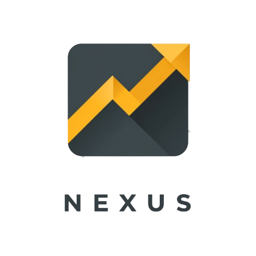
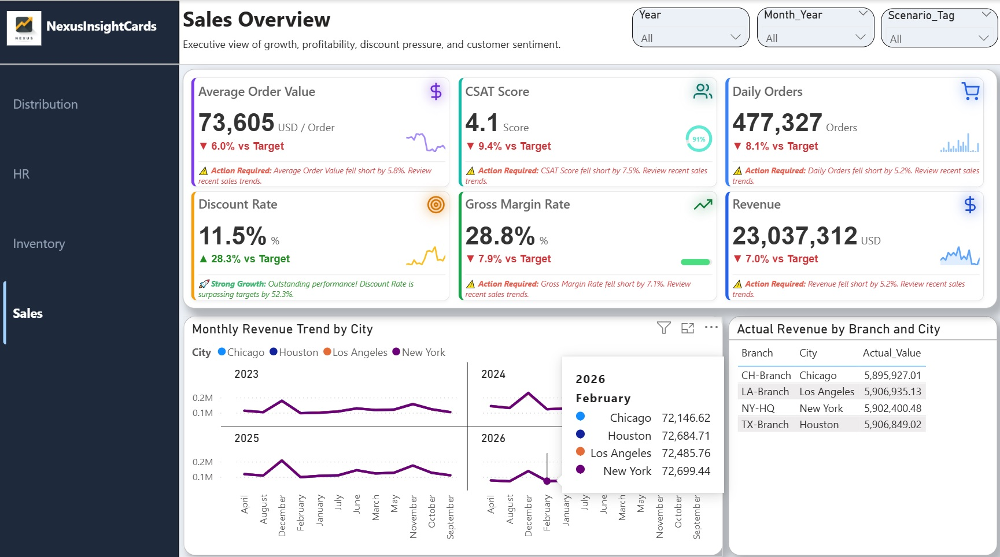

See what changed
Display current performance alongside targets, prior periods, variance and compact trends.
Power BI Custom Visual · Version 1.0.0

Built by Nexus Insight StudioNexus InsightCards combines KPIs, comparisons, sparklines, variance and automated narrative alerts in one responsive visual designed for executive reporting.

Real dashboard showcase
This demonstration uses synthetic business data to show how InsightCards can present growth, profitability, customer experience and operational performance in a single executive view.
Display current performance alongside targets, prior periods, variance and compact trends.
Use contextual colours, icons and narrative alert footers to surface areas that need action.
Build responsive KPI grids without creating a separate visual for every metric.
Product demos
These short walkthroughs show the visual inside an executive Power BI report. Videos use real product behaviour and demonstration data.
See how multiple KPI categories, comparisons and micro-trends work together in a focused executive reporting experience.
View documentation ↗A concise introduction to the visual and its reporting experience.
Explore card layouts, trends, indicators and contextual performance messages.
Try the official files
The sample PBIX uses demonstration data. The packaged visual is the official version 1.0.0 release from the Nexus InsightCards GitHub repository.
Open a complete Power BI report containing practical sales, profitability and operational examples built with Nexus InsightCards.
Download the packaged visual from the official GitHub Release and import it into Power BI Desktop.
Review product guidance, release information and technical resources from the official project destinations.
Nexus can support data modelling, DAX, dashboard delivery and InsightCards implementation.